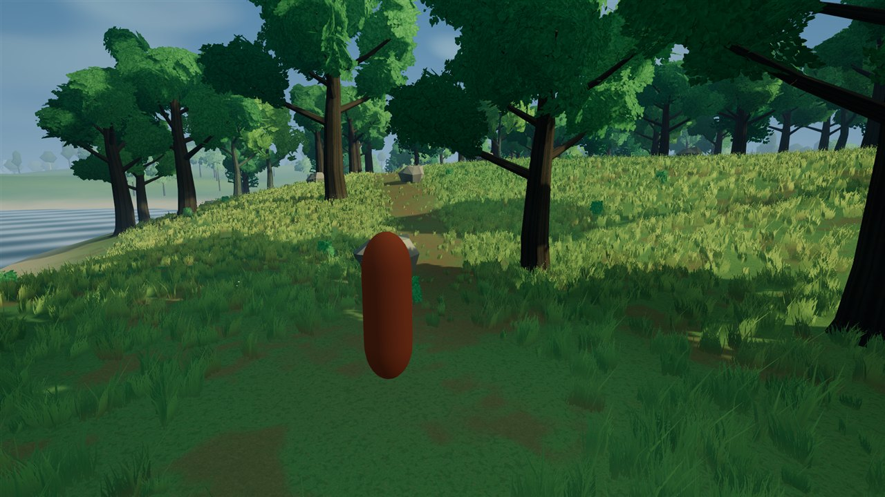
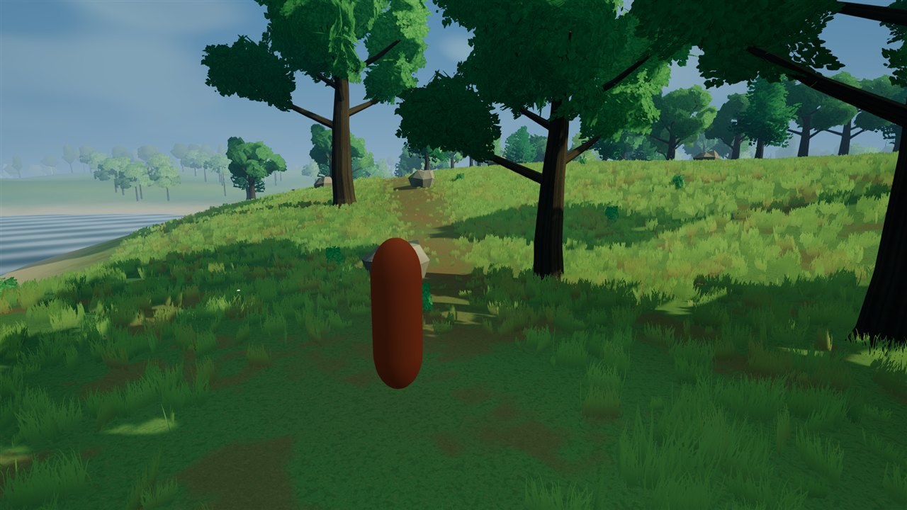
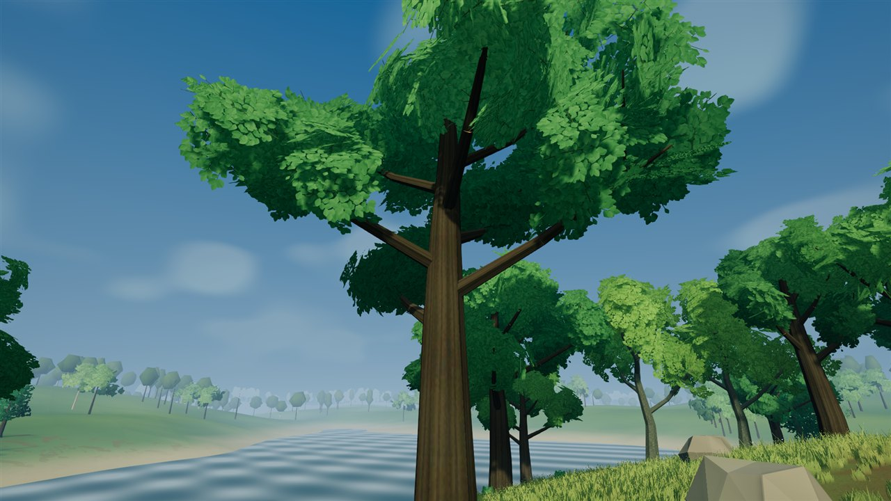
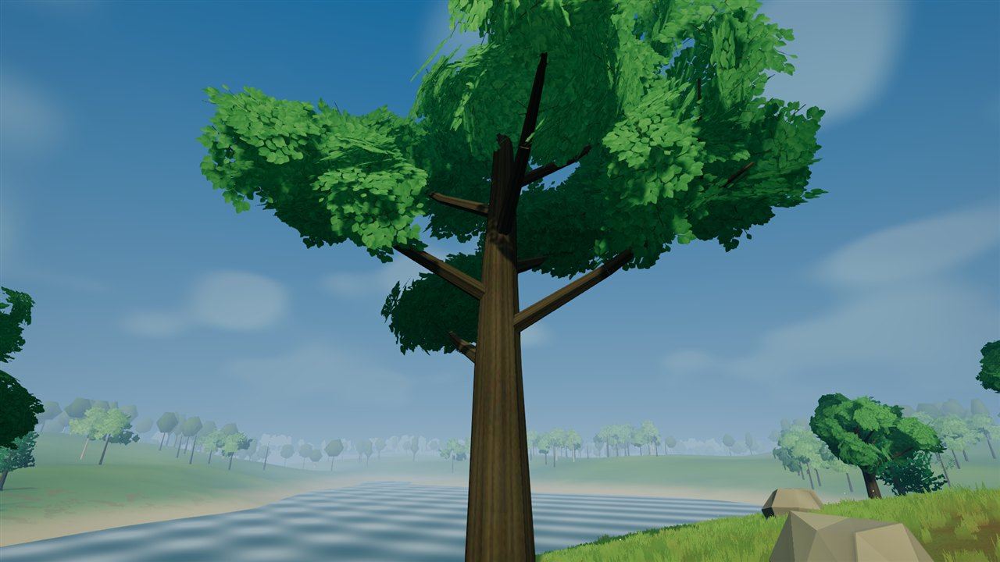
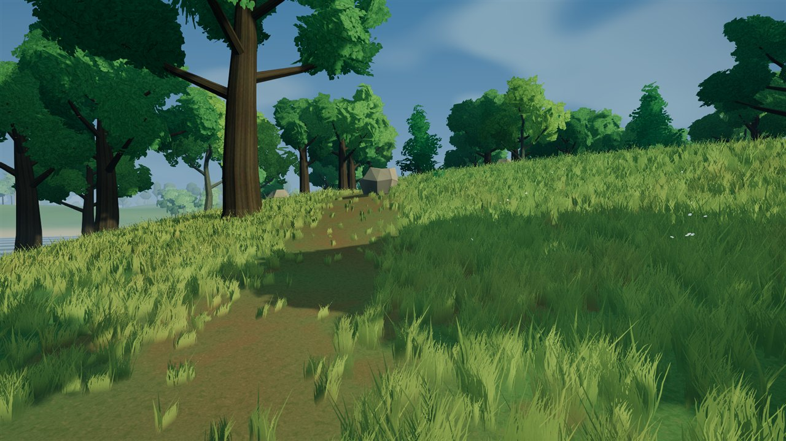
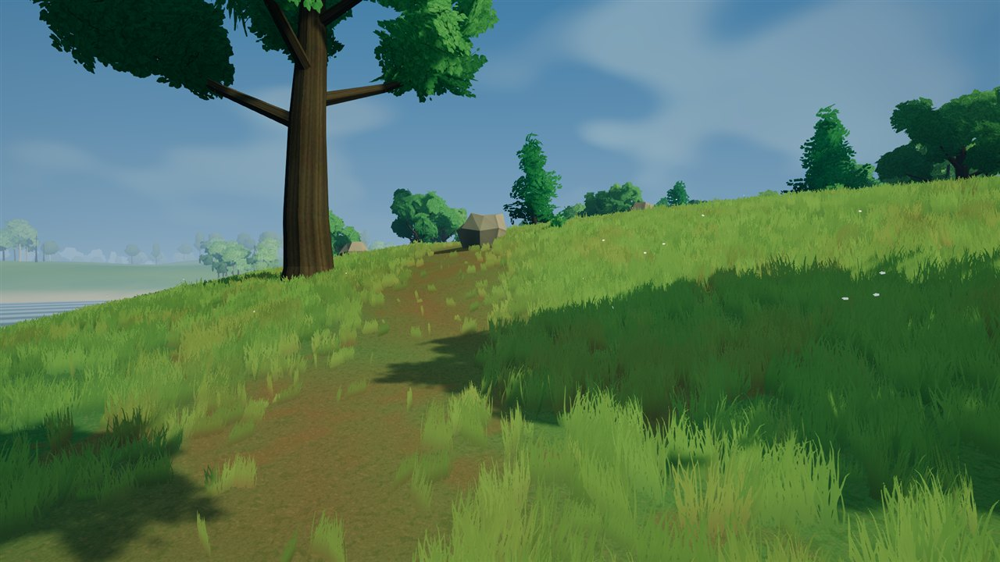
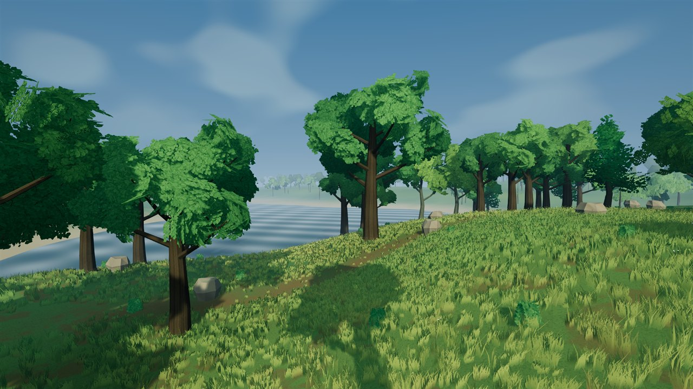
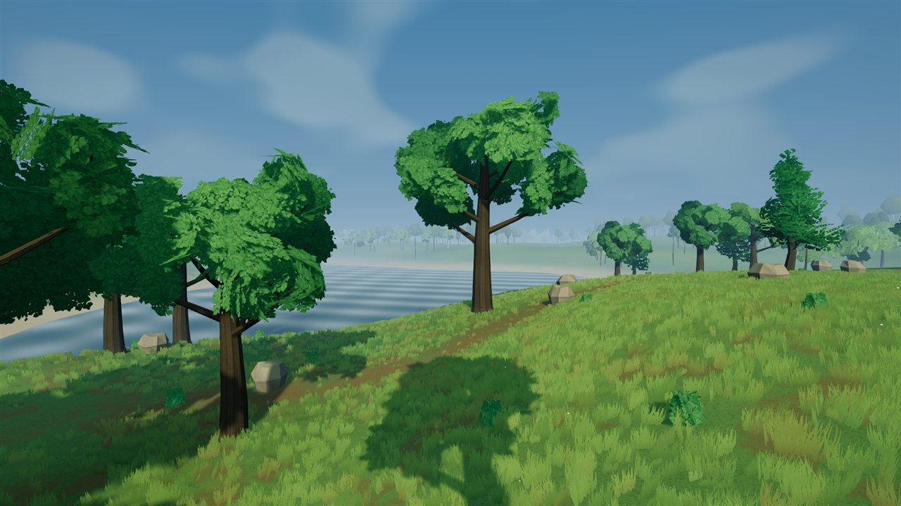

MEADOW VISUALS / NORMAL GAMEPLAY
The meadow joins the game.
Four native comparisons show the accepted meadow treatment integrated into ordinary gameplay: richer curved grass, lighting and harvestable streamed groves. Saving and harvesting remain enabled in the game; no reference launch flag is required.
Latest images appear first. Tap any image for its full-resolution original. This website contains screenshots, not a playable mobile game. The earlier reference study remains available.
NORMAL GAME / MATCHED COMPARISON
Ordinary player camera


NORMAL GAME / MATCHED COMPARISON
Canopy inspection


NORMAL GAME / MATCHED COMPARISON
Grass at player height


NORMAL GAME / MATCHED COMPARISON
Harvestable forest edge

